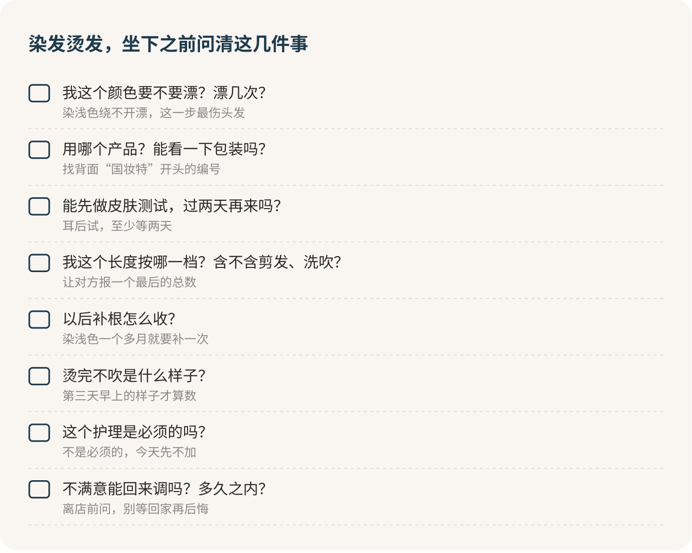

染发和烫发：先问代价，再谈好看
染和烫我都不反对，好看是真好看。但我的立场是：坐下之前，先把代价问清楚，再去看色板和卷型。代价有三笔：头皮会不会出事，头发一定会变差，以后每隔几周还得再掏一次钱。“伤不伤发”根本不用问，一定伤；“做个护理就补回来了”，是店里最常见的一句话术。三笔账都认了还想做，那就放心去做。
店里那句“没问题”
第一次去染头发，场面通常是这样的：发型师递过来一本色板，你指着那格亚麻灰，他看一眼你的头发，说“没问题，很适合你”。你其实还有一肚子问题，会不会过敏、要不要漂、能维持多久、最后到底多少钱，但看着他胸有成竹的样子，又怕问多了显得外行、显得抠，于是点点头，坐下了。
这句“没问题”，至少盖住了三件不同的事。染发更像开通一个自动续费的会员，开通那天最轻松，真正的账在后面一期一期地扣。所以别不好意思，你问得越细，越说明你是认真来的。好的发型师不怕被问，怕被问的那种，你更该多问两句。
染浅色，绕不开漂
你现在是自然黑发，想染亚麻、奶茶、灰色这类浅色亮色，基本都得先漂。漂，就是先把头发里原本的黑色去掉，再往上染颜色。这是整件事里最伤头发的一步，漂得越浅、次数越多，头发越干、越脆、越容易断。
所以我的倾向很明确：第一次染，选离自然发色近一点的颜色。染深比染浅友好得多，跟自己的发色差得不多，往往不用漂，伤得少，长出黑根来也没那么扎眼。真想要一头浅色，就做好接下来几个月头发手感变差、要勤补色的准备。
坐下先问这一句，答案决定了后面一切：
我现在是自然黑发，想染这个颜色。需要漂吗？漂几次？最后大概偏什么色？
“我以前染过，没事”不算数
很多人拿这句话当护身符，我劝你别信。染发过敏有个很阴的地方：第一次接触时，身体可能悄悄“记住”了某个成分，你什么感觉都没有；等下一次再碰到，才突然红、痒、肿、起水疱。用了好几年没事、突然有一天过敏的人，并不少见。换了牌子、换了颜色，也一样可能出事。颜色越深的染膏，越要小心；以前做过“黑色海娜”临时纹身的人，也更容易对染发剂过敏。
所以皮肤测试这一步，我给它贴的标签是必做。做法是在耳后涂一点调好的染膏，至少等四十八小时，没有红肿刺痒再染。这意味着染发最好分两次去：第一次选色、看产品、做测试，过两天再来染。预约的时候就说好：
我想先做个皮肤测试，过两天再来染。用哪个产品？能让我看一下包装吗？
看包装是你的正当权利。染发剂和防晒一样，在国内要注册才能卖，背面有一行“国妆特”开头的编号，找不到就别用。测试没反应也不等于百分之百保险，只是少了一分风险。以前对哪款染发剂起过反应，这一款就永远别再碰。
头皮烧起来，马上冲掉
染发时头皮有一点点麻，可能有。但“麻”和“烧”是两回事。头皮开始发烫、灼烧，别听“马上就好”“再坚持十分钟”，也别觉得“都涂了一半，钱都付了”，直接说：
现在头皮有点烧，不是一点点麻。请先帮我冲掉，今天先不继续。
染完以后几小时到两三天，头皮、耳朵、眼皮或者脸开始红、痒、肿、起水疱，赶紧彻底冲洗，别再用，带上产品包装去医院皮肤科。要是嘴唇、舌头、喉咙突然肿起来，喘不上气，立刻打急救电话，这一条没有商量。
有几种情况，这次干脆别染：以前对染发剂或黑色海娜纹身起过反应；皮肤测试有反应；头皮上有伤口、湿疹；怀孕或者哺乳期。
黑根一定会长出来
颜色掉得快还是慢另说，黑根是一定会来的。头发一个月大概长一厘米多，染的颜色和自然发色差得越多，新长出来那一截越显眼。染浅色的人，通常一个多月就得去补一次根。
这笔账我替你算过一个上限：在北京商圈的沙龙，染一次四五百，之后每六周补一次，按全染的价钱补，一年下来四五千块。补根要是比全染便宜，总数会少不少，所以报价时一定追问三样：你这个长度按哪一档，漂和染是不是分开收，以后补根怎么算钱。
染之前先想想，你愿不愿意每隔一个多月就为这头颜色去一趟店。愿意，就染；想到就烦，那就选深一点的颜色，或者先不染。
烫发：先想第三天早上
烫完走出店门那一刻的样子，是发型师吹出来的，像外卖平台上的商品图；决定你满不满意的，是第三天早上那份实物：自己洗完头，站在宿舍镜子前，没人帮你吹。
所以烫发我建议倒着想：先想清楚第三天你愿意花几分钟，再回头挑卷型。在店里一定要问到具体：
我洗完头大多自然干，最多吹五分钟。烫完以后，不吹是什么样子？要用什么产品？
答案要是“必须吹才好看”，而你根本不想天天吹，那就换一种卷，或者这次不烫。第一次烫，我的倾向是卷度小一点、范围小一点。弧度不够，下次还能加；烫过头了，只能等它长出来或者剪掉。
店里那些名字，纹理烫、锡纸烫、羊毛卷、空气感，都是门店起的款式名，没有统一标准，别被名字带着走。把它拆回几个能问的问题：冷烫还是热烫，烫哪个区域，卷多大。大致说，冷烫做出来的卷从根到尾更紧、更均匀；热烫多是中段到发尾松松的波浪。拿着参考图，再追问一句：“图里这是烫出来的，还是烫完又用卷发棒做的？”很多图里的卷，一半功劳是卷发棒。
价钱也问清楚。北京商圈沙龙烫一个中长发再加剪，六七百起步，含不含剪发、洗吹、护理，每家都不一样，让他报一个最后的总数。
刚染过别烫，染和烫别凑一起
刚染、刚漂过的头发，我劝你先别急着烫。染和烫别排在同一时期，这一条我给它的标签是别碰：两样化学处理叠在一起，头皮和头发都要吃双份的苦，漂过再烫，断发的风险更高。头发已经明显干、脆、一扯就断，先停下来，把最伤的那截剪掉再说。
烫之前把头发的历史全交代出来：漂过没有，最近染过没有，发尾干不干。烫完多久能再染再烫，我不信一个人人都适用的数字，看产品说明，看你自己头发和头皮的状态。
烫的那天，太烫太紧就说
上卷杠时头发被拉得太紧、卷杠压得头皮疼，说。上药水后凉凉的、有点味道，正常；变成刺痛、灼烧，马上叫停冲掉。热烫加热时觉得烫，请他关掉看一眼你的头皮。别嫌自己娇气，热锡纸和吹风机贴着头皮真能烫伤，严重的会伤到毛囊，那块以后就不长头发了。
最后一步很多人会漏：请发型师别直接给你做最完美的造型，先按你回家自己会做的方式吹一遍，毛巾擦干、抓一点产品、吹到半干，你拍个视频。顺便问一句，几天后卷掉得特别快，能不能回来调。
护理可以做，别指望它
不管染还是烫，做到一半大概率会听到：“你头发受损挺严重的，建议加个护理。”护理能让头发摸起来顺一点、看起来亮一点，但它补不回已经伤掉的头发，做一次就回到没染没烫之前，是不可能的。
我的判断是：护理想做可以做，别被一句“不做会很伤”绑上几百块。被推荐时问一句“这次是必须的吗”，不是必须的，今天就不加。

第一次做，颜色选离自然色近一点的，卷选小一点的。不够下次还能加，过了只能等它慢慢长出来。